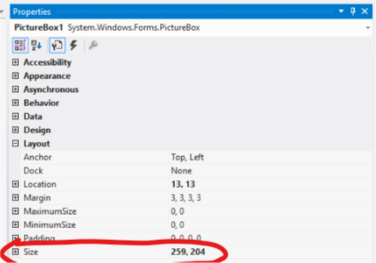

Simple Paint With Bitmaps Tutorial Morosko Final
Overview
This tutorial is to help understand Bitmaps, and graphics in Visual Basic. We will be creating a simple paint program with the functions to reset your painting and save it.
Bitmaps
Bitmaps are for storing images. They can be resied and manipulated. Bitmaps store an image as a position and color value for a bit(pixel).
Graphics
Graphics is the class used to draw various shapes and objects such as a line, rectangle, or circle.
Project Consept
To create the paint program we will use the bitmap and graphics classes to set a painting area inside an Image box. Then we will detect when the user is inside the image box and clicking the left mouse button. If that is the case then we will use the graphics class to draw a square right at the position of the mouse. We will then allow the user to save the image using the bitmap save method and the save dialog.
Let's Start
Layout
- Add an PictureBox, two Buttons, a label, a SaveFileDialog and a ComboBox.
- Set the label text to "Color Selection", the buttons to "save" and "reset", and the ComboBox items property to black, blue and red.
alt text
- Next let's double click the form to add a form on load function. Add 3 global variables and the tasks inside the form1_Load sub.
Dim bmp As New Drawing.Bitmap(259, 204)
Dim gfx As Graphics = Graphics.FromImage(bmp)
Dim color As Brush = Brushes.Black
Private Sub Form1_Load(sender As Object, e As EventArgs) Handles MyBase.Load
gfx.FillRectangle(Brushes.White, 0, 0, PictureBox1.Width, PictureBox1.Height)
PictureBox1.Image = bmp
End Sub
Above we created a Bitmap, Graphic, abd a Brush. In the form1_Load we set the graphic to a solid rectagle of white, it started at point 0, 0 in the picture box and is the same width and height. On line 1 you would need to change the height and width to the correct size for your image box. The size can be found in the properties under layout in the size row. 
Functionality
On Load Event
- Add a mouse move event to the Picture Box. Click events tab in the properties box, then double select mouse move. Add the code below to the sub.
alt text
Private Sub PictureBox1_MouseMove(sender As Object, e As MouseEventArgs) Handles PictureBox1.MouseMove
If MouseButtons.HasFlag(MouseButtons.Left) Then
Try
gfx.FillRectangle(color, MousePosition.X - Me.Location.X - PictureBox1.Location.X - 8, MousePosition.Y - Me.Location.Y - PictureBox1.Location.Y - 30, 4, 4)
'OR . . . use this for the smallest size line
'bmp.SetPixel(MousePosition.X - Me.Location.X - PictureBox1.Location.X - 8, MousePosition.Y - Me.Location.Y - PictureBox1.Location.Y - 30, Color.Black)
PictureBox1.Image = bmp
Catch ex As Exception
End Try
End If
End Sub
At this point you are able to test the program without errors. * The code above draws a 4px x 4px rectangle at the mouse position. The mouse position is calculated from the top left of the screen, therefore to get the position inside the picturebox we must subrtact the location of the window, the pictureBox, and the top bar. * Line 6 above shows how to draw pixel by pixel using the set pixel function in the Bitmap class. * The last step to drawing anything wither a pixel or a rectangle is to reset the Picturebox to the new image. * All is put in a try catch to avoid the error thrown when the user is outside of the picture box.
Reset Button
- Double click the reset buttion to add a click event. Then add the code below. This is identical to the on load event.
```vb
Private Sub Button1_Click(sender As Object, e As EventArgs) Handles Button1.Click
gfx.FillRectangle(Brushes.White, 0, 0, PictureBox1.Width, PictureBox1.Height)
PictureBox1.Image = bmp
End Sub```
#### Save File Button
- Add a click event for the Save Button. Then add the code Below.
```vb
Private Sub Button2_Click(sender As Object, e As EventArgs) Handles Button2.Click
Dim saveFileDialog1 As New SaveFileDialog()
saveFileDialog1.Filter = "png files (*.png)|*.png"
saveFileDialog1.FilterIndex = 1
saveFileDialog1.RestoreDirectory = True
If saveFileDialog1.ShowDialog() = DialogResult.OK Then
MessageBox.Show("Image Saved to: " & saveFileDialog1.FileName.ToString)
bmp.Save(saveFileDialog1.FileName.ToString, System.Drawing.Imaging.ImageFormat.Png)
End If
End Sub```
As stated in our project consept this save button uses the Bitmap.Save() method. Save in this example takes two parameters (full file path including file name ex(C:/Documents/img.png), a image format type ex(.png, .jpg)
#### Change Graphic Brush Color
- Add a selected value changed event to the Picture Box. Click events tab in the properties box, then double select SelectedValueChanged. Add the code below to the sub. Test the program and draw, reset, change the color.
alt text
```vb
Private Sub ComboBox1_SelectedValueChanged(sender As Object, e As EventArgs) Handles ComboBox1.SelectedValueChanged
Select Case ComboBox1.SelectedIndex
Case 2
color = Brushes.Red
Case 1
color = Brushes.Blue
Case 0
color = Brushes.Black
End Select
End Sub```
This sub is called every time a new value is selected. The select case changes the color gloabal variable to a different color using Brushes.